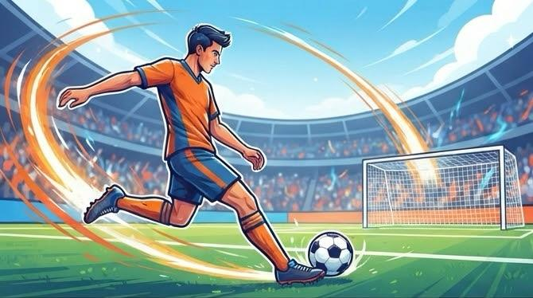
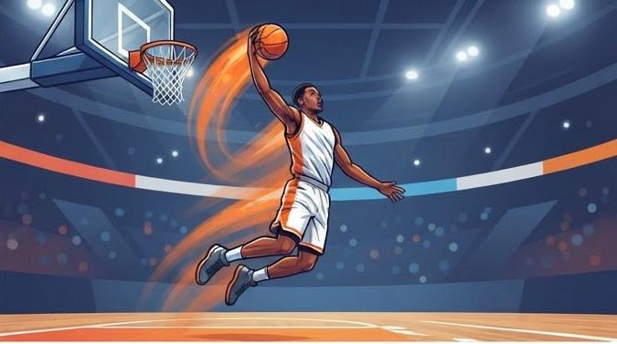

Deportes
Los deportes nos ayudan a mantenernos activos, mejorar nuestras habilidades y compartir momentos con otras personas.

Fútbol
El fútbol no es solo correr atrás de una pelota: es pasión, emoción y trabajo en equipo. Cada partido es una oportunidad para demostrar habilidad, tomar decisiones rápidas y dejar todo en la cancha. Ya sea jugando con amigos o alentando desde afuera, el fútbol siempre tiene algo que nos hace querer un poco más.

Básquet
Velocidad, energía y pasión en cada jugada. En el básquet no hay tiempo para quedarse quieto: correr, esquivar, pasar y lanzar son parte de la emoción. Un buen equipo, una gran jugada y una pelota entrando al aro... ¡eso es básquet!